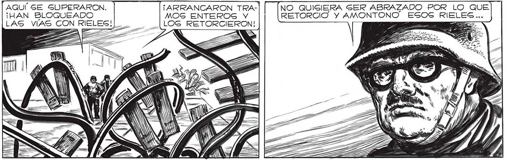
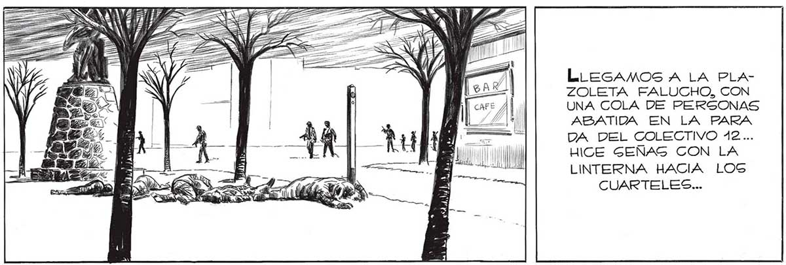

PERO SERA INÚTIL CONVENCER AL MAYOR QUE VAMOS DE CABEZA A UNA TRAMPA... ELLOS TAMBIÉN HABRAN PREVISTO UN RETROCESO NUESTRO... Í, JUAN... ELLOS LO DISPUSIERON TODO PARA QUE ENTRARAMOS A LA CIUDA IVUSTAMENTE POR AQUÍ... <= ES DESPUES DE TODO,ES MAS PROPIO DE NUESTRA ESPECIE ACABAR ATACANDO, YENDO FARA ADELANTE, QUE NO ENCOGIENDONOG COMO TOPOG. FEDERICO LAGROZE, OLLEROS, MAURE,GOROSTIAGA... TODAS BLOQUEADAS POR ESCOMBROS... y EL SUELO QUE SEGUÍA TEMBLANDO, "COMO Sl POR ALLÍ CERCA GALOPARAN GIGANTES” LA CALLE DORREGO ESTABA TAMBIÉN COMO TODAS LAS OTRAS CALLES LATERALES,BLOQUEADAS POR LOS EGCOMBROS DE EDIFICIOS DERRUIDOS.TODOSG CAIDOS HACIA LA CALLE, COMO EMPUJADOS CON LA MANO... O y AQUÍ GE GUPERARON. | ¡ARRANCARON TRA- NO QUISIERA SER ABRAZADO POR LO QUE ¡HAN BLOQUEADO MOS ENTEROS Y RETORCIO Y AMONTONO” ESOS RIELES... (LOS RETORCIERON! == He " pr ro PER a Ñ = >. y PP % pr Pa y pu SEGUIMOS AVANZANDO POR EL UNICO RUMBO QUE NOG QUEDABA LIBRE: HACIA ADELANTE, HACIA EL CENTRO... CONTINUARON GUMANDOGE LAS CUADRAS... A re a hh ol ¡au L SU Ta 33? yn SA "La EZ ! PS LLEGAMOS A LA PLAZOLETA FALUCHO, CON UNA GOLA DE PERSONAS ABATIDA EN LA PARA DA DEL COLECTIVO 42... HICE SEÑAS CON LA LINTERNA HACIA LOS CUARTELES... 193

